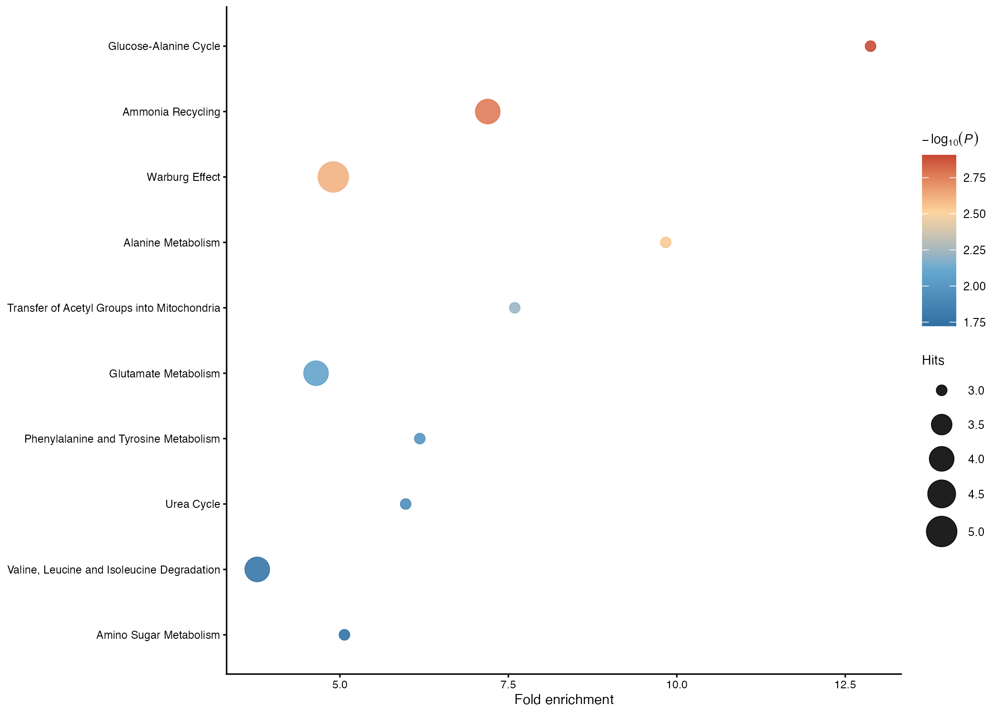

install.packages("BiocManager")
BiocManager::install(c("clusterProfiler", "AnnotationDbi", "org.Hs.eg.db"))
# Optional helper used by several PPI and enrichment wrappers
remotes::install_github("Hinna0818/TCMDATA")
# Optional backend for metabolite-set ORA
remotes::install_github("xia-lab/MetaboAnalystR")Bioinformatics and omics analyses
This chapter introduces the omics-analysis layer in UKBAnalytica. The current implementation supports proteomics workflows and a first metabolomics over-representation analysis (ORA) workflow. The proteomics module is mainly designed for plasma Olink proteins from UK Biobank RAP analyses, whereas the metabolomics module focuses on mapped small-molecule metabolites from UKB Nightingale-style panels.
The omics workflow is organized around four tasks:
- association screening between proteins and clinical outcomes;
- functional enrichment analysis of selected proteins;
- STRING-based protein-protein interaction (PPI) network analysis.
- metabolite-set ORA and pathway visualization.
In RAP projects, participant-level matrices should remain inside the approved analysis environment. The examples below assume that users export only aggregate regression results, enrichment summaries, and figures.
Required packages
Proteomics enrichment and network analysis use optional Bioconductor and network packages. Metabolomics ORA can either use a user-supplied metabolite pathway library or the optional MetaboAnalystR backend.
Proteomics input and identifier handling
RAP-exported Olink protein columns often appear as lower-case field-derived names, for example olink_instance_0.gdf15 or olink_instance_0.il6. protein_to_gene_symbol() converts these identifiers to HGNC gene symbols for enrichment and PPI analyses. It also supports UKB coding 143 style labels such as IL6;Interleukin-6 and multi-target labels such as IL12A_IL12B.
library(UKBAnalytica)
protein_to_gene_symbol(c(
"olink_instance_0.gdf15",
"olink_instance_0.il6",
"IL12A_IL12B;Interleukin-12"
))If an upstream platform uses UniProt IDs or panel-specific identifiers, provide a custom mapping table.
custom_map <- data.frame(
protein = c("P05231", "P01375"),
gene_symbol = c("IL6", "TNF")
)
protein_to_gene_symbol(
proteins = c("P05231", "P01375"),
from_type = "UNIPROT",
mapping_table = custom_map
)Protein-outcome regression analysis
For incident disease outcomes, proteins can be screened with Cox proportional hazards models using runmulti_cox(). Each protein is fitted as the main exposure in a separate model, while the same adjustment covariates are applied across all proteins.
protein_cols <- grep("^olink_instance_0\\.", names(train_data), value = TRUE)
cox_res <- runmulti_cox(
data = train_data,
main_var = protein_cols,
endpoint = c("follow_up_time", "incident_status"),
covariates = c(
"age", "sex", "bmi", "smoking_status",
"TDI", "ethnic", "education"
)
)runmulti_cox() returns one row per protein with variable, coef, HR, lower95, upper95, pvalue, n, and n_event. Multiple-testing correction should be applied before selecting candidate proteins.
cox_res$p_bh <- p.adjust(cox_res$pvalue, method = "BH")
cox_res$p_bonferroni <- p.adjust(cox_res$pvalue, method = "bonferroni")
cox_res <- merge(
cox_res,
protein_to_gene_symbol(cox_res, protein_col = "variable"),
by.x = "variable",
by.y = "protein",
all.x = TRUE
)
sig_proteins <- subset(cox_res, p_bonferroni < 0.05)For binary outcomes, the same structure can be used with runmulti_logit(), followed by BH or Bonferroni correction of the returned p-values.
Volcano visualization
plot_regression_volcano() accepts outputs from runmulti_cox() or runmulti_logit(). Users specify the effect column, raw p-value column, and the adjusted p-value column used for highlighting.
volcano_plot <- plot_regression_volcano(
cox_res,
effect_col = "HR",
p_col = "pvalue",
adjusted_p_col = "p_bonferroni",
label_col = "gene_symbol",
significance_cutoff = 0.05,
top_n_label_each = 5,
null_effect = 1,
x_lab = "Hazard ratio"
)
volcano_plotFor logistic regression results, set effect_col = "OR" and keep null_effect = 1.
Gene enrichment analysis
After selecting significant proteins, run_protein_ora() performs GO over-representation analysis through clusterProfiler::enrichGO(). For proteomics panels, the measured protein panel should usually be used as the background universe instead of the whole genome.
sig_gene_symbols <- unique(na.omit(sig_proteins$gene_symbol))
go_bp <- run_protein_ora(
proteins = sig_gene_symbols,
universe = protein_cols,
ont = "BP",
pAdjustMethod = "BH",
pvalueCutoff = 0.05,
qvalueCutoff = 0.20
)
go_table <- as.data.frame(go_bp$ora_result)
go_table[, c("ID", "Description", "GeneRatio", "p.adjust", "Count")]The package provides light plotting helpers for enrichment results.
plot_enrichment_lollipop(
go_bp,
top_n = 10,
plot_title = "GO biological process enrichment"
)KEGG ORA can be run with run_protein_kegg_ora() when pathway-level annotation is needed.
kegg_res <- run_protein_kegg_ora(
proteins = sig_gene_symbols,
universe = protein_cols,
pAdjustMethod = "BH"
)PPI network analysis
get_protein_ppi() maps proteins to gene symbols and retrieves STRING PPI networks through clusterProfiler::getPPI(). The returned object stores both the mapped symbols and the network, which helps users inspect identifier conversion before downstream network analysis.
ppi_res <- get_protein_ppi(
proteins = sig_gene_symbols,
taxID = 9606,
network_type = "functional",
output = "igraph"
)
ppi_res$gene_symbols
ppi_res$ppiThe network can then be filtered and annotated with topological metrics.
ppi_filtered <- subset_protein_ppi(
ppi_res,
score_cutoff = 0.70,
rm_isolates = TRUE
)
ppi_metrics <- compute_protein_ppi_metrics(
ppi_filtered,
weight_attr = "score"
)
node_rank <- rank_protein_ppi_nodes(ppi_metrics)
head(node_rank$table)PPI module clustering
For module detection, run_protein_ppi_clustering() provides a unified interface to fast-greedy, Louvain, MCODE, and MCL clustering. The example below uses fast-greedy community detection on the largest connected component and stores cluster labels in the fast_greedy_cluster vertex attribute.
ppi_fg <- run_protein_ppi_clustering(
ppi_metrics,
method = "fastgreedy",
n_clusters = 4,
largest_component = TRUE
)
fg_scores <- score_protein_ppi_clusters(
ppi_fg,
cluster_attr = "fast_greedy_cluster",
min_size = 3
)
fg_scoresCluster labels can be used for module-specific biological interpretation. A common strategy is to run GO BP enrichment separately for proteins in each cluster or to pass cluster-specific gene lists to clusterProfiler::compareCluster().
library(igraph)
cluster_df <- data.frame(
gene_symbol = V(ppi_fg)$name,
cluster = V(ppi_fg)$fast_greedy_cluster
)
cluster_gene_list <- split(cluster_df$gene_symbol, cluster_df$cluster)
cluster_go <- clusterProfiler::compareCluster(
geneCluster = cluster_gene_list,
fun = "enrichGO",
OrgDb = org.Hs.eg.db::org.Hs.eg.db,
keyType = "SYMBOL",
ont = "BP",
pAdjustMethod = "BH"
)When interpreting PPI clusters, keep the STRING score cutoff, disconnected components, and cluster size threshold explicit in the methods section.
Metabolomics input and metabolite mapping
UK Biobank metabolomics data contain a mixture of small molecules, lipoprotein subclass measurements, aggregate lipid traits, and protein measurements. load_ukb_metabolite_panel() reads the bundled non-ratio metabolite panel, and classify_metabolites() separates small molecules from lipoprotein-related traits. Small molecules are then mapped to MetaboAnalyst-compatible names using metabolite_to_metaboanalyst_name().
library(UKBAnalytica)
panel <- load_ukb_metabolite_panel()
metab_map <- classify_metabolites(panel$Description)
table(metab_map$category)
small_molecules <- subset(metab_map, category == "small_molecule")
head(small_molecules)If a study uses platform-specific metabolite names, users can provide a custom mapping table. Custom mappings override the built-in UKB/Nightingale mapping.
custom_metab_map <- data.frame(
metabolite = c("beta-hydroxybutyrate", "lactate"),
metaboanalyst_name = c("3-Hydroxybutyric acid", "Lactic acid")
)
metabolite_to_metaboanalyst_name(
c("beta-hydroxybutyrate", "lactate"),
mapping_table = custom_metab_map
)Metabolite over-representation analysis
run_metabolite_ora() performs metabolite ORA and returns a standardized ukb_metabolite_ora object with the input list, mapping table, matched metabolites, unmatched metabolites, and ORA result table.
The most transparent option is backend = "custom", where users provide a two-column metabolite-set library. This is suitable when a project has a curated pathway database or wants a fully offline workflow.
hits <- c("Alanine", "Glutamine", "Glycine", "Lactate", "Pyruvate")
pathway_db <- data.frame(
pathway = c(
rep("Amino acid metabolism", 3),
rep("Energy metabolism", 2)
),
metabolite = c(
"L-Alanine", "L-Glutamine", "Glycine",
"Lactic acid", "Pyruvic acid"
)
)
ora_custom <- run_metabolite_ora(
metabolites = hits,
pathway_db = pathway_db,
backend = "custom",
p_adjust_method = "BH"
)
ora_custom$ora_resultFor users who have installed MetaboAnalystR, backend = "metaboanalyst" can query its metabolite-set libraries, such as SMPDB pathways. The wrapper automatically harmonizes common UKB/Nightingale metabolite names before calling MetaboAnalystR.
hits <- c(
"Alanine", "Glutamine", "Glycine", "Histidine",
"Isoleucine", "Leucine", "Valine", "Phenylalanine",
"Tyrosine", "Glucose", "Lactate", "Pyruvate",
"Citrate", "Acetone", "Acetoacetate", "Acetate"
)
ora_ma <- run_metabolite_ora(
metabolites = hits,
backend = "metaboanalyst",
library = "smpdb_pathway",
p_adjust_method = "BH"
)
head(ora_ma$mapping)
head(ora_ma$ora_result)The result table contains pathway names, raw p-values, adjusted p-values, hit counts, expected counts, and fold enrichment. The two plotting helpers create publication-oriented dot plots and bar plots using the same standardized ORA object.
plot_metabolite_ora_dotplot(
ora_ma,
top_n = 10
)
plot_metabolite_ora_barplot(
ora_ma,
top_n = 10
)
Notes on metabolomics interpretation
Metabolite ORA depends strongly on the metabolite universe and identifier mapping. For UKB Nightingale data, lipoprotein subclass and aggregate lipid measurements should not be interpreted as individual small-molecule metabolites unless a study defines a specific mapping strategy. For pathway enrichment, report the metabolite list, background universe, pathway database, identifier mapping rules, and multiple-testing method.
Practical recommendations
- Use the measured proteomics panel as the enrichment background when possible.
- Report both the raw p-value and the adjusted p-value method used for protein screening.
- Keep protein scaling and covariate adjustment consistent between training and validation analyses.
- For PPI analyses, record the STRING network type, score cutoff, filtering rules, and clustering algorithm.
- For metabolomics ORA, record the metabolite identifier mapping and the pathway database used for enrichment.
- Export only aggregate summaries and publication figures from RAP projects.